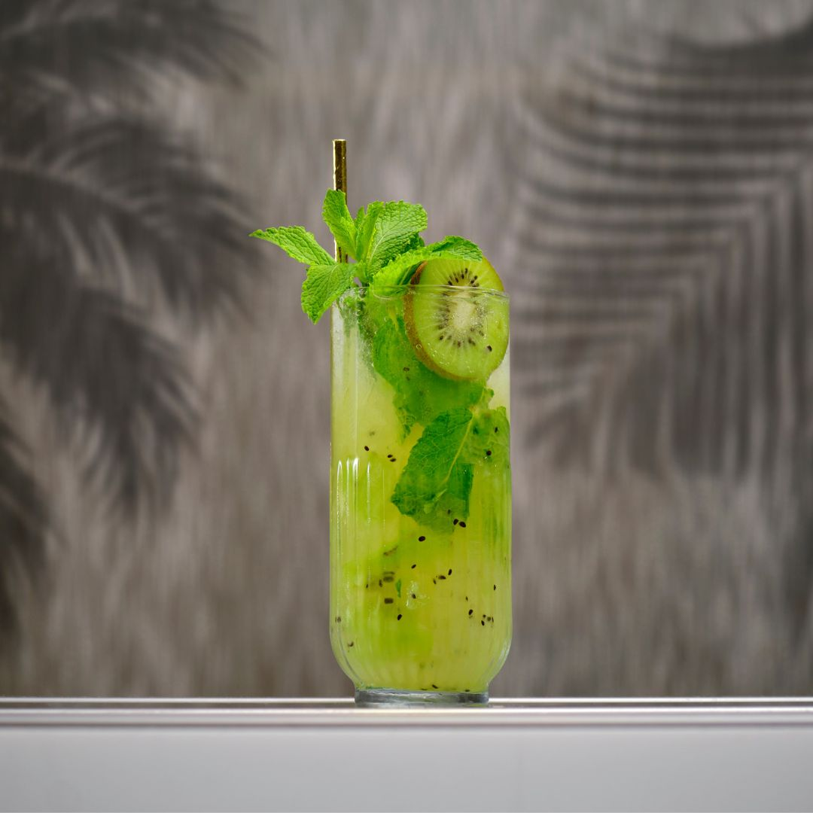

Kiwi Mojito

A classic cuban cocktail, loved by Hemmingway. We like ours mixed up with kiwi and green tea for a refreshing twist.
The perfect mix of rum, lime, mint, kiwi and house made vanilla green tea syrup. .
The drink is typically muddled and then served long over crushed or pebble ice.
Ingredients
- 50ml Rum
- 25ml Lime Juice
- 20ml Vanilla & Green Tea Syrup
- 1/2 Kiwi Muddled
- 8-10 Mint Leaves
- Soda Water
Steps
- Add the green tea syrup, kiwi and mint leaves to a glass.
- Muddle to break down the kiwi and combine.
- Add the rum and lime juice.
- Half fill the glass with crushed ice and churn it up with a bar spoon.
- Fill up the rest of the way and then top with soda.
- Garnish with a sprig of mint and a slice of kiwi.
Return to drinks list